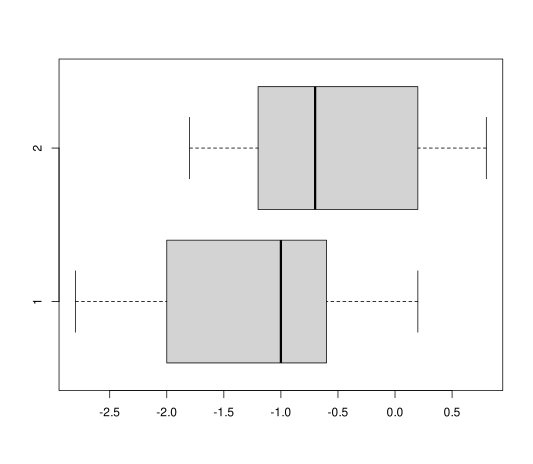

Pharmacy exam 2021-01-18 Degrees: Pharmacy, Biotechnology Date: January 18, 2021 Question 1 The table below contains the differences between the grades in the final school exam and the entrance exam in a sample of public high schools ($X$) and private high schools ($Y$): $$ \begin{array}{lrrrrrrrrr} \hline \mbox{Public schools} & -1.2 & -0.7 & -0.4 & -0.9 & -1.6 & 0.5 & 0.2 & -1.8 & 0.8\newline \mbox{Private schools} & -2.1 & -0.5 & -0.7 & -1.9 & 0.2 & -2.8 & -1\newline \hline \end{array} $$ Which of the following box plots corresponds to each variable? Compare the central dispersion of the two variables according to the box plots. In which variable is smaller the median?  In which type of schools is more representative the mean of grades? In which type of schools is more symmetric the distribution of grades? In which type of schools is more peaked the distribution of grades? Which difference is relatively smaller, $-0.5$ points in a public high school or $-1$ points in a private high school? Use the following sums for the computations: Public: $\sum x_i=-5.1$, $\sum x_i^2=9.63$, $\sum (x_i-\bar x)^3=0.95$ and $\sum (x_i-\bar x)^4=8.76$. Private: $\sum y_i=-8.8$, $\sum y_i^2=17.64$, $\sum (y_i-\bar y)^3=-0.82$ and $\sum (y_i-\bar y)^4=11.28$. Solution The box plot 1 corresponds to private schools and the box plot 2 to public schools. The central dispersion is pretty similar in both variables. The median is smaller in private schools. Public schools: $\bar x=-0.5667$ , $s^2=0.7489$ , $s=0.8654$ and $cv=1.5271$. Private schools: $\bar y=-1.2571$ , $s^2=0.9396$ , $s=0.9693$ and $cv=0.7711$. Thus, the mean of the grade is more representative in private schools. $g_{1x}=0.1626$ and $g_{1y}=-0.1285$. Thus, the distribution of grades in private schools is more symmetric as the coefficient of skewness is closer to 0. $g_{2x}=-1.2651$ and $g_{2y}=-1.1748$. Thus, the distribution of grades in private schools is more peaked. Public schools: $z(-0.5)=0.077$. Private schools: $z(-1)=0.2653$. Thus, a difference of grades -0.5 in a public schools is relatively smaller than a difference of -1 in a private school. Question 2 An auditor is studying the relationship between the salary and the number of absences of a hospital warden. The following table shows the salary in thousands of euros ($X$) and the annual average of absences with that salary ($Y$). $$ \begin{array}{lrrrrrrrrr} \hline \mbox{Salary} & 20.0 & 22.5 & 25 & 27.5 & 30.0 & 32.5 & 35.0 & 37.5 & 40.0 \newline \mbox{Absences} & 2.3 & 2.0 & 2 & 1.8 & 2.2 & 1.5 & 1.2 & 1.3 & 0.6 \newline \hline \end{array} $$ Compute the regression line that best explains the absences as a function of the salary. What is the expected number of absences that will have a warden with a salary of 29000€? Is this prediction reliable? How much will the number of absences increase or decrease for every increment of 1000€ in the salary? Use the following sums for the computations: $\sum x_i=270$ $10^3$€, $\sum y_i=14.9$ absences, $\sum x_i^2=8475$ ($10^3$€)$^2$, $\sum y_i^2=27.11$ absences$^2$, $\sum x_iy_j=420$ $10^3$€ absences. Solution $\bar x=30$ $10^3$€, $s_x^2=41.6667$ ($10^3$€)$^2$, $\bar y=1.6556$ absences, $s_y^2=0.2714$ absences$^2$, $s_{xy}=-3$ $10^3$€ absences. Regression line of absences on salary: $y=3.8156-0.072x$. $y(29) = 1.7276$ absences. $r^2 = 0.796$, thus the model fits well as the coefficient of determination is not far from 1, but the sample size is too small to be reliable the prediction. The number of absences will decrease 0.072 for every increment of 1000€ in the salary. Question 3 In a regression study it is known that the regression line of $Y$ on $X$ is $y+2x-10=0$ and the regression line of $X$ on $Y$ is $y+3x-14=0$. Compute the means of $X$ and $Y$. Compute the linear correlation coefficient and interpret it. Solution $\bar x=4$ and $\bar y=2$. $r=-0.8165$. The linear correlation coefficient is near -1 so there is a strong inverse relation between $X$ and $Y$. Question 4 A test to detect prostate cancer produces 1% of false positives and 0.2% false negatives. It is known that 1 in 400 males suffer this type of cancer. Compute the sensitivity and the specificity of the test. If a male got a positive outcome in the test, what is the chance of developing cancer? Compute and interpret the negative predictive value. Is this test better to predict or to rule out the cancer? To study whether there is an association between the practice of sports and this type of cancer, a sample of 1000 males was drawn, of which 700 practised sports, and it was observed that there were 2 males with cancer in the group of males who practised sports, and there were 3 males with cancer in the group of males who did not practice sports. Compute the relative risk and the odds ratio and interpret them. Solution Let $D$ the event corresponding to suffering prostate cancer and $+$ and $-$ the events corresponding to get a positive and a negative outcome respectively. The sensitivity is $P(+|D) = 0.2$ and specificity $P(-|\overline D) = 0.99$. Positive predictive value $P(D|+) = 0.0476$. Negative predictive value $P(\overline D|-) = 0.998$. As the positive predictive value is smaller than the negative predictive value, this test is better to rule out the disease. In fact, we can not use this test to detect the prostate cancer because the positive predictive value is less than 0.5. $RR(D)=0.2857$ and $OR(D)=0.2837$. Thus, there is an association between the practice of sports and the prostate cancer and the risks and the odds of developing cancer is almost one fourth smaller if the male practice sports. Resolución Question 5 The probability that a child of a mother with the color-blind gene and a father without the color-blind gene is a color-blind male is $0.25$. It is also known that in a population there is one color-blind male for every 5000 males. If this couple has 5 children, what is the probability that at most 2 of them are color-blind males? If this couple has 5 children, and the gender of the children is equiprobable, what is the probability that 3 or more are females? In a random sample of 10000 males of this population, what is the probability that more than 3 are color-blind males? Solution Let $X$ be the number of color-blind sons in a sample of 5 children, then $X\sim B(5, 0.25)$ and $P(X\leq 2)=0.8965$. Let $Y$ be the number of girls in a sample of 5 children, then $Y\sim B(5, 0.5)$ and $P(Y\geq 3)=0.5$. Let $Z$ be the number of color-blind males in a sample of 10000 males, then $Z\sim B(10000, 0.0002)\approx P(2)$ and $P(Z>3)=0.1429$. Resolución Question 6 The primate cranial capacity follows a normal distribution with mean 1200 cm$^3$ and standard deviation 140 cm$^3$. Compute the probability that the cranial capacity of a primate is greater than 1400 cm$^3$. Compute the probability that the cranial capacity of a primate is exactly than 1400 cm$^3$. Above what cranial capacity will 20% of primates be? Compute the interquartile range of the cranial capacity of primates and interpret it. Solution Let $X$ be the primate cranial capacity. Then $X\sim N(1200,140)$. $P(X>1400) = 0.0766$. $P(X=1400) = 0$. $P_{80} = 1317.827$ cm$^3$. $Q_1 = 1105.5714$ cm$^3$, $Q_3 = 1294.4286$ cm$^3$ and $IQR = 188.8571$ cm$^3$. Thus the 50% of central data will be concentranted in an interval of width $188.8571$ cm$^3$, that is a small spread. Resolución Exam Statistics Biostatistics Previous Pharmacy exam 2021-10-25 Next Pharmacy exam 2020-11-23